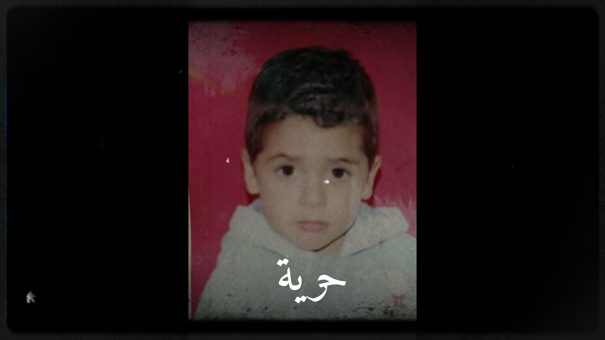
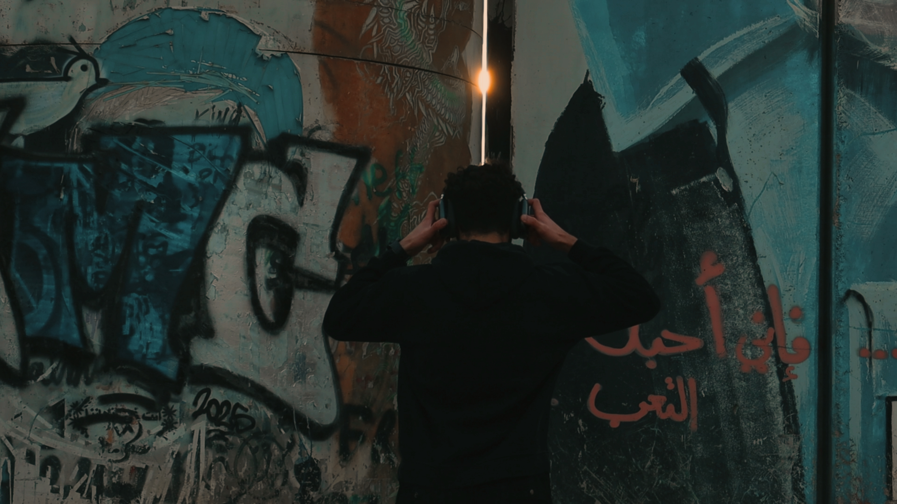
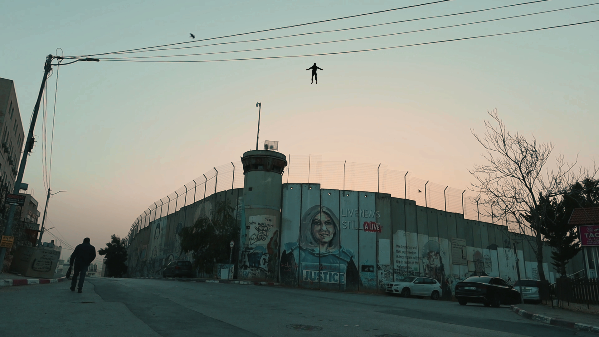

Freedom Is Close Yet Distant
Selected at CARLOTA International Film Festival
Vienna
Nominated for the Palestinian Voice Award
Political Film Festival · Istanbul, Turkey
Al-Maamoura Film Festival
Abu Dhabi
Watch the film
About the film
Through a blend of nostalgic childhood archives and striking contemporary reflects on the deeply [freedom is close yet distant] ,imagery personal impact of physical barriers and restricted movement. As childhood dreams of freedom collide with the stark reality of separation, the film uses poetic visual metaphors to explore how close- yet distant-true freedom can feel
Stills


